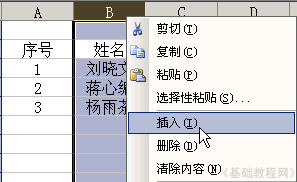
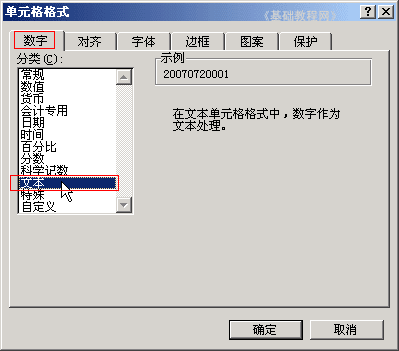
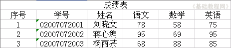
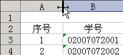
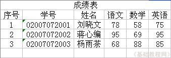

Excel 基础入门教程
文本和列宽 返回
在数据中，有一类是文字类的文本格式，像身份证号码、学号等，下面我们来看一个练习；
1、启动Excel
1）点击“开始－所有程序－Microsoft－Microsoft Office Excel 2003”；
2）出现一个满是格子的空白窗口，这就是一张电子表格了，第一个格子看着边框要粗一些，处于选中状态；

2、输入文本
1）点菜单“文件－打开”命令，打开上次的“成绩表”文件；
2）瞄准表格上边的标题“B”点右键，选“插入”命令，在A列的后面插入一个空白列，原来的B列变成C列了；

3）在序号旁边的单元格输入“学号”，作为列标题，在下面输入学号“02007072001”，
按回车键后发现最前面的0没了，原来是当数字自动省略了，
选中B3－B5这三个单元格，敲右键选“设置单元格格式”，在上边“数字”面板中，选择“文本”，点确定；

4）再回去就可以输入0了，分别输入“02007072001”到“0200707072003”，按Ctrl＋S键保存一下文件；

3、调整列宽
1）“序号”这一列有些太宽了，可以把它调小一些，右键菜单里面有个“列宽”命令；
把鼠标移到列标志A和B之间，指针变成双箭头时向左拖动一下，列宽就减小了，也可以瞄准双击左键；

6）同样在B和C，C和D等后面的单元格之间瞄准，指针变化后双击左键，调整好间距；

保存一下文件；
本节学习了输入数字文本和调整列宽的方法，如果你成功地完成了练习，请继续学习下一课内容；
本教程由86团学校TeliuTe制作|著作权所有
基础教程网：http://teliute.org/
美丽的校园……
转载和引用本站内容，请保留版权信息和本站链接。